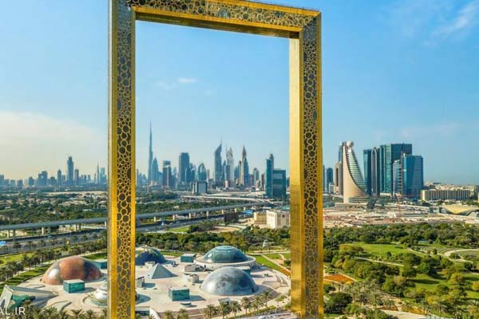
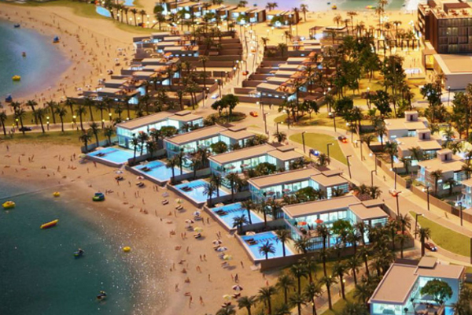
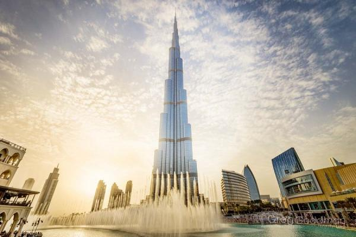
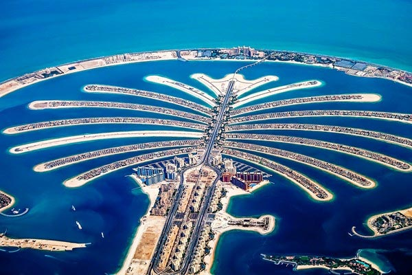

Рамка Дубая

Рамка Дубай - одна из сокровищниц дубая. Вид на Дубай со 150-метровой высоты захватывает дух ― город отсюда просматривается как на ладони. Все красоты Дубая: старые кварталы района Deira, искрящиеся воды Арабского залива, дюны пустыни Руб-Эль-Хали и современные небоскребы района Dubai Marina, предстанут перед вами во всем своем великолепии.
Раму венчает уникальный стеклянный мост площадью в 25 квадратных метров, который соединяет две параллельные башни, расположенные друг от друга на расстоянии 93 метров. Ступив на него, вы почувствуете, словно парите над 150-метровой бездной. Однако бояться вам абсолютно нечего! Стеклянная панель, выполненная из материалов наивысшего качества, прочнее стали.
Пляж Ла Мер

Пляж Ла Мер находится в самом городе, а не за его пределами, поэтому добраться сюда несложно. Тонкость лишь в том, что ближайшие станции метро в 3-х километрах и до пляжа удобнее всего добираться на такси (это точно того стоит). Варианты, как добраться до Ла
Бурдж Халифа

Бурдж Халифа сразу планировался как самый высокий небоскреб, но его проектная высота держалась в тайне. Это было сделано на тот случай, если где-то будет запроектировано здание большей высоты, — тогда в проект могли бы внести корректировки. Дубайская башня задумывалась как «город в городе» — с собственными газонами, бульварами и парками. Общая стоимость сооружения — около 1,5 миллиардов долларов. Внутри комплекса Бурдж-Халифа размещены отель, квартиры, офисы и торговые центры. Здание имеет три отдельных входа: в отель, в апартаменты и в офисные помещения. На 43-м и 76-м этажах расположены тренажёрные залы, бассейны, смотровые площадки с джакузи. На 122-м этаже находится ресторан «Атмосфера» на 80 мест — это расположенный на самой большой высоте в мире ресторан.Самая высокая смотровая площадка Бурдж-Халифа находится на 148-м этаже на высоте 555 метров. Еще две площадки расположены на 124-м (472 метра) и 125-м этажах.
Пальма Джумейра

Пальма Джумейра — первый и самый компактный из трех искусственных Пальмовых островов, сооруженных в форме стилизованных пальм у берегов Дубая — крупнейшего города Объединенных Арабских Эмиратов. К двум другим аналогичным объектам — Пальмам Джабаль-Али и Дейра — приступили чуть позже, через год и через три соответственно.Строительство Пальмы Джумейра началось в середине 2001 года. Работы проводились арабской компанией-девелопером, основанной за год до старта масштабного проекта. Ее название — Nakheel — в переводе с арабского звучит как «пальма» или «пальмовое дерево». Через пять с половиной лет, в конце 2006 года, территория насыпного острова была готова к поэтапной передаче под застройку и заселение. По разным причинам дата неоднократно передвигалась, в результате чего запланированные сроки увеличились на пару лет.